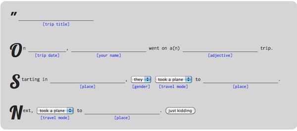

KML tours in Google Earth
Over this last year and a half, I spent a lot of time in airports, flying nearly 150,000 km (queue environmental angst). I lived in Europe and both coasts of the US, somehow getting a masters from CMU in the end. For posterity, I wanted to digitally summarize this extensive globetrotting experience, but found no adequate applications. It was an experience worth celebrating, and how better to celebrate than by writing some code...? So I wrote an application demo that renders travel adventures as a tour in Google Earth.
First you fill in a pretty silly madlib describing your trip:

Then, you can view your trip in the browser using the Google Earth plugin, or download the tour and open it in the Google Earth application. Each trip gets a unique URL that can be shared with others. Here is a youtubified summary of my recent travels generated by this app:
How it works
The madlib provides a list of places and transportation modes, the places resolving to (lat, long) coordinates, and the transportation modes affecting the transition effects between places. Airplane transitions are shown with the camera oriented north, in a bird's eye view, while ground transport transitions are more complex, facing in the direction of travel and changing pitch angle. The application builds KML in JavaScript and eventually loads it all in a Google Earth plugin:
// Build the KML
var helper = new KMLHelper();
helper.processData(data.places, function() {
// Generate KML tour for this
data.kml = helper.kml();
data.distance = helper.distance();
var json = JSON.stringify(data);
// Save the new data to the database
$.ajax({...})
});
// Eventually render the KML (ge is a Google Earth instance)
$.getJSON('/trips/' + id + '/', function(data) {
var kmlObject = ge.parseKml(data.kml);
ge.getFeatures().appendChild(kmlObject);
});
Place-to-place transition effects are achieved by using KML Tours, which provide powerful camera control requiring some computation, like getting the midpoint between (lat, long) pairs. Math for midpoint and other common geodesy operations are well documented by Chris Veness, who also provides an implementation in the form of a handy JavaScript library.
In addition to destinations, travel paths and transitions, this demo uses the picasaweb API to get public picasaweb images as GroundOverlays near places you visited. While it's possible to get a user's photos tagged with a tag, there is, rather bizarrely, no way to get a specific user's images tagged with a given location.
As usual, all of the code is available on the github. It's running live on thattrip.appspot.com, so try it out.
Observations
The Google Earth plugin provides what is probably the richest map view available on the web, but it is not without drawbacks. The mere fact that it's a plugin immediately shrinks the possible user base of any app that relies it and adds to load time. There's no way to pre-cache the data that will be shown on a tour, causing a lot of chunky terrain during quick transitions. While KML is rich and makes it possible to embed images as ground and photo overlays, the web at large has far more options to handle images, through CSS transformations and animations or by embedding in a canvas or SVG element.
This demo is very geo-centric, telling a story almost exclusively about where you went, with the images added as an afterthought. In retrospect, a more compelling story is one about what you personally saw, shown in travel photos, with a geodesy cherry on top. Stay tuned for future work...